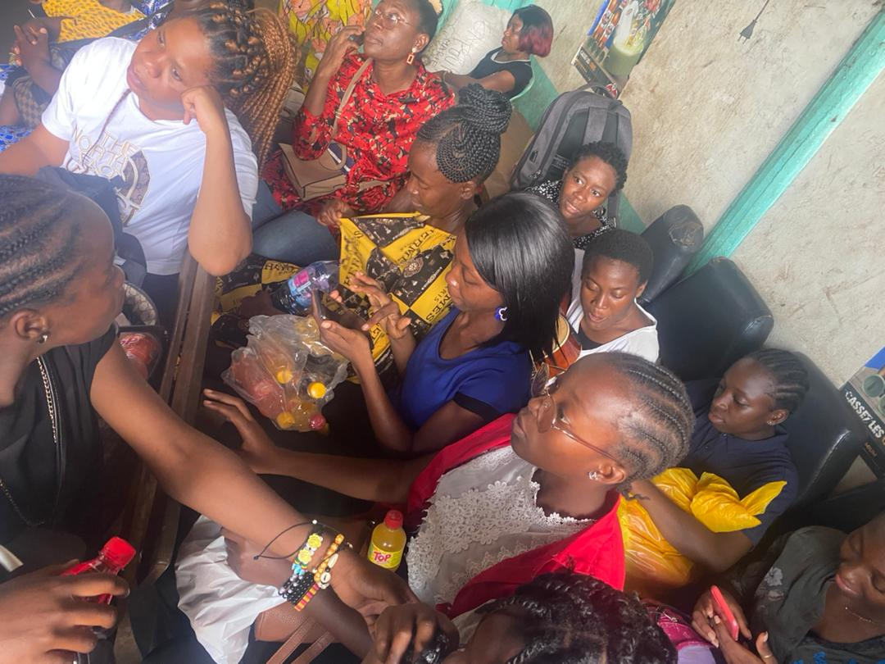

Programmes des femmes
Women's programs
2e édition - Douala 2025
2nd edition - Douala 2025
Voir la galerie
View gallery

1re édition - Akonolinga 2024
1st edition - Akonolinga 2024
Voir la galerie
View gallery